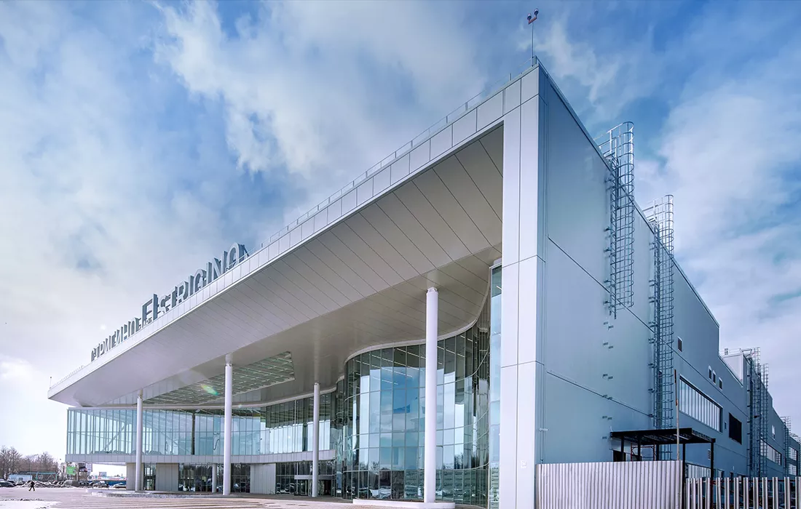
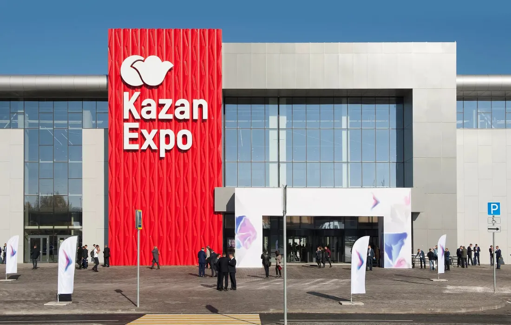
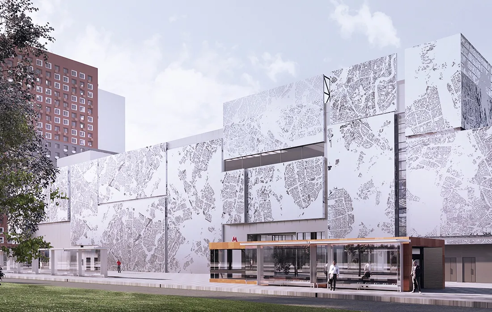

Решения Frontside
Фасады для объектов с особыми требованиями к архитектуре и эстетике
Поможем инвестору и архитектору реализовать идеи, которые пройдут архитектурно-градостроительные согласования, будут экономически выгодны и эстетичны.
Далее
Аэропорт Платов
Объекты с нашими фасадами
Аэропорт в Стригино

Аэропорт Платов
Центр художественной гимнастики Ирины Винер-Усмановой
Выставочный центр «Казань Экспо»

ТПУ «Рассказовка»

Стадион «Динамо»
Поможем инвестору и архитектору
реализовать идеи
Особые требования к архитектуре
На здание будут смотреть люди
Объекты строятся в городской застройке и знаковых местах, поэтому облик здания крайне важен. Приёмку ведут первые лица.
Нужны нестандартные архитектурные решения
Проекты разрабатывают известные бюро, предлагающие необычные решения для зданий. Мы поможем воплотить каждую их идею.
Проектирование повышенной сложности
На конструктив влияют расположение, перепады высот, изгибы и необычные поверхности здания. Работа с такой спецификой для нас привычна.
Особые требования к процессу и результату
Построенный объект должен выглядеть идеально
0103Готовое здание должно смотреться лучше, чем 3D-визуализация: без ошибок в цвете, повреждений фасадных систем и брака при монтаже.
На объекте регулярно присутствуют VIP-руководители
0203Производство и поставки работают как часы: изготавливаем и отгружаем вовремя, продукция собирается, словно «Лего».
Все вопросы решаются оперативно и грамотно
0303Руководитель проекта реагирует на инженерные задачи и сдвиги графика, при необходимости подключает проектирование, производство и логистику.
Услуги
- 01
Техническое проектирование и подготовка документации
Полная техническая поддержка и документация для архитекторов и проектировщиков по всем фасадным узлам и компонентам.
- 02
Производство фасадных систем для объекта
Рассчитаем всю необходимую комплектацию и изготовим продукцию строго в срок.
- 03
Логистика и сопровождение монтажа на объекте
Продумываем упаковку, доставляем фасад в последовательности монтажа, обучаем монтажные организации и проводим шеф-монтаж.
Frontside на связи
Специалисты свяжутся с вами в течение рабочего дня
- Телефон
- +7 (495) 642-80-91
- Почта
- info@frontside.ru